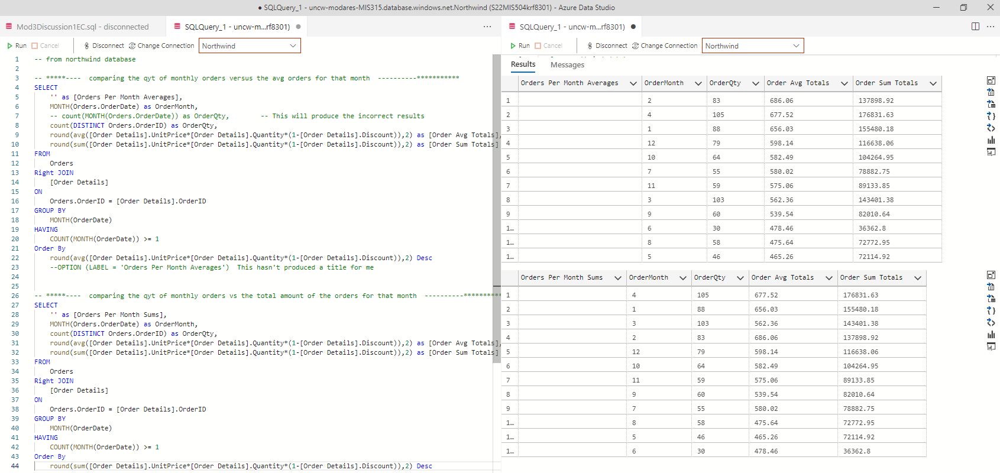
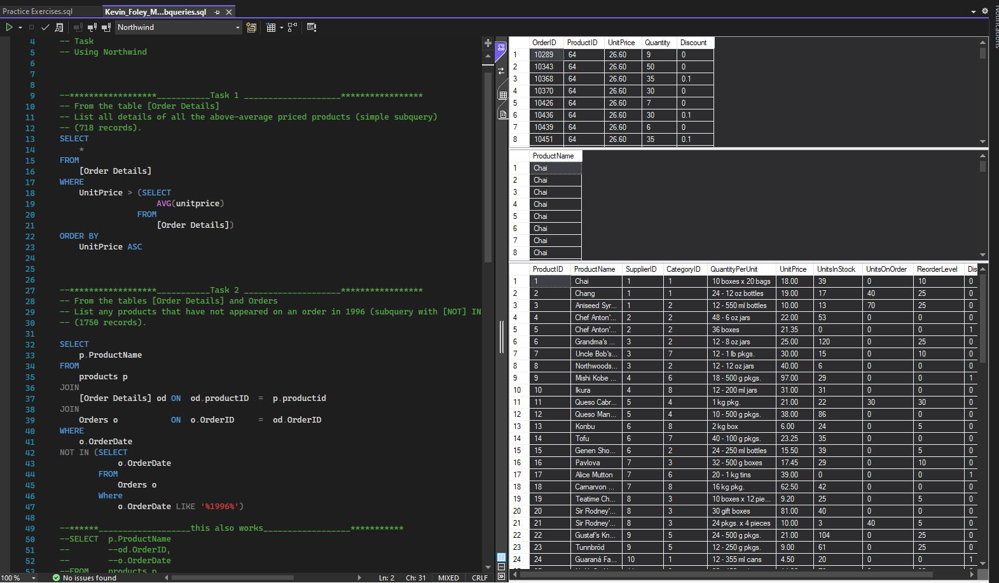

SQL
I was quite comfortable with using SQL for queries and my coding experience enabled me to achieve the proper results quickly. I used Visual studio and Azure Data Studio to perform my queries. Here are a few screen captures from queries I conducted. I found Azure to be quick in creating the data which made for less work in some cases
- This screenshot is for joining and some operations performed on the various elements using Azure Data Studio.

- This screenshot is for sub-queries using the northwind database in Visual Studio.
